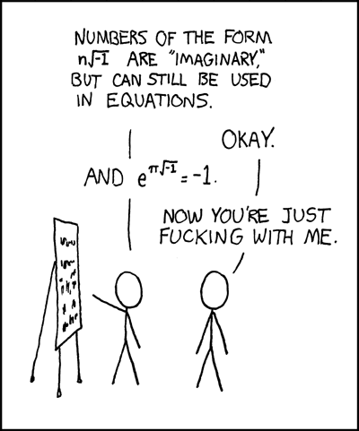

Komplekse tal
Supplerende stof
Matematik A
Vibenshus Gymnasium
Behovet for komplekse tal
En alm 2.gradsligning
Hvad med, at vi lige prøver at løse en 2.gradsligning
\[z^2 -4 z +5 = 0\]
Vi gør det lige på tavlen.
\[z = 2 \pm \frac{\sqrt{-4}}{2}\]
Grafen for 2.gradsligningen
- Der er i hvert fald ingen reelle rødder.
- Men der er komplekse løsninger!
Komplekse tal
- Den imaginære enhed \[i = \sqrt{-1}\]
- Et kompleks tal \[z = x + iy\]
- En reel del \[Re(z) = x\]
- En imaginær del \[Im(z) = y\]
Tilbage til 2.gradsligningen
\[z = 2 \pm \frac{\sqrt{-4}}{2}\]
\[z = 2 \pm \frac{\sqrt{-1}\sqrt{4}}{2}=2 \pm \frac{i\sqrt{4}}{2} = 2 \pm i\]
Det komplekse talplan (Argand-diagram)
- Så hvor ligger de to komplekse tal \(z=2 \pm i\)?
Aritmetik med komplekse tal

Addition og subtraktion
- Er meget ligetil. Reelle dele for sig og imaginære dele for sig.
- Eksempel: \(z=-2+4i\), \(u=3i\), \(v=5-i\) og \(w= 1+2i\) \[z-u+v- w\]
Opgave
Ruten for et orienteringsløb, hvis strækninger er opløst i retlinjede komposanter, kan beskrives med komplekse tal.
Start er placeret i \(0+0i\), og der løbes fra Start til 7 poster, \(P_1-P_7\). Hvis posterne skal nås i den påtænkte sekvens, skal løberne løbe de komplekse strækninger i den herunder viste rækkefølge. Posternes positioner findes ved addition af de komplekse strækninger.
- Til \(P_1\): \(300\)
- Til \(P_2\): \(100 + 100i\)
- Til \(P_3\): \(200i-400\)
- Til \(P_4\): \(300 + 200i\)
- Til \(P_5\): \(-200 - 400i\)
- Til \(P_6\): \(200i - 300\)
- Til \(P_7\): \(200 - 400i\)
- Beregn de komplekse talværdier til de 7 punkter på ruten.
- \(P_7\), som er Mål for orienteringsløbet, er beliggende i nærheden af Start. Hvor stor er afstanden mellem Mål og Start?
- Hvis nord er i den reelle akses positive retning, hvilken retning skal du da gå i for at komme fra \(P_7\) til \(P_1\)?
- Hvor langt er løbet planlagt til at være, når der regnes med længdeenheden én meter?
Multiplikation
- Man skal bare gøre, som der står, selvom det er lidt bøvlet.
- Eksempel \(z=-2 +4i\) og \(v=5-i\) \[z \cdot v\]
Lidt blandede opgaver
Der er givet følgende fire komplekse tal \[z=5+2i \quad u = 2+3i \quad v = -1 + 3i \quad w=1+i\]
Udregn og reducér i hånden
- \(z+u\)
- \(u-v\)
- \(u \cdot v\)
- \(z \cdot u - v\)
- \(w^2\)
Opgaver kun om multiplikation
Udfør multiplikation af følgende komplekse tal:
- \(z=1 +2i \quad u=3 + 4i \qquad z\cdot u =?\)
- \(z=5 +6i \quad u=7 + 8i \qquad z\cdot u =?\)
- \(z=-3 +2i \quad u=-1 -i \qquad z\cdot u =?\)
- \(z=4 -2i \quad u=i \qquad z\cdot u =?\)
- Kan I se en umiddelbar sammenhæng?
There must be a better way!
Modulus og argument
For det komplekse tal \[z = x + yi\]
Modulus - Afstanden fra origo til det komplekse tal \[\left| z \right| = \sqrt{x^2+y^2} =\sqrt{Re(z)^2+Im(z)^2}\]
Argument - Vinklen mellem den reelle akse og det komplekse tal
\[arg(x) = \tan^{-1} \left( \frac{y}{x} \right) = \tan^{-1} \left( \frac{Im(z)}{Re(z)} \right)\]
OBS: Nogle gange skal man lægge \(\pi\) til eller trække \(\pi\) fra, alt efter i hvilken kvadrant det komplekse tal er beliggende. Hvis man har adgang til atan2 eller arctan2 eller noget lignende, så brug den funktion.
Opgaver kun om multiplikation (igen)
Bestem modulus og argument for hhv. \(z\), \(u\) og \(z \cdot u\) fra forrige opgave.
- \(z=1 +2i \quad u=3 + 4i \qquad z\cdot u =-5 + 10i\)
- \(z=5 +6i \quad u=7 + 8i \qquad z\cdot u =-13 +82i\)
- \(z=-3 +2i \quad u=-1 -i \qquad z\cdot u = 5 +i\)
- \(z=4 -2i \quad u=i \qquad z\cdot u =2 + 4i\)
Svarene er
- \begin{align*} z &=1 +2i: & |z|&=2.236 & arg(z)&=1.107 \\ u &=3 + 4i: & |u|&=5 & arg(u)&=0.927 \\ z\cdot u &=-5 + 10i: & |z\cdot u| &=11.18 & arg(z \cdot u) &= 2.034 \end{align*}
- \begin{align*} z &=5 +6i: & |z|&=7.81 & arg(z)&=0.876 \\ u &=7 + 8i: & |u|&=10.63 & arg(u)&=0.852 \\ z\cdot u &=-5 + 10i: & |z\cdot u| &=83.02 & arg(z \cdot u) &=1.728 \end{align*}
- \begin{align*} z &=-3 +2i: & |z|&=3.61 & arg(z)&=2.554 \\ u &=-1 -i: & |u|&=1.41 & arg(u)&=-2.356 \\ z\cdot u &=5 + i: & |z\cdot u| &=5.10 & arg(z \cdot u) &=0.197 \end{align*}
- \begin{align*} z &=4 -2i: & |z|&=4.47 & arg(z)&=-0.464 \\ u &=i: & |u|&=1 & arg(u)&=1.571 \\ z\cdot u &=2 + 4i: & |z\cdot u| &=4.47 & arg(z \cdot u) &=1.107 \end{align*}
Kan I nu se en sammenhæng?
Hvad så med division?
Kompleks konjugering to the rescue
Kompleks konjugering
Man ændre bare fortegnet på den imaginære del.
\begin{align*} z &= x+yi \\ z^{*} &= x - yi \end{align*}- \(z^{*}\) er den kompleks konjugerede til \(z\).
- Det svarer til at spejle det komplekse tal omkring den reelle akse.
Eksempler
Den kompleks konjugerede til
\[z = a-2 -4i + 5i \cdot b \cdot c\]
er
Den kompleks konjugerede til
\[z=w^{(-2y+4xi)} \text{ for } w=(2x-3i)\]
er
Regneregler for kompleks konjugering
Opgave: Eftervis selv 3 af reglerne vha. håndskrift.
Division på rektangulær form
Division mellem \(z_1= x_1+y_1 i\), \(z_2=x_2+y_2 i\) er kvotienten mellem dem
- Men hvad så her fra?
Find en reel nævner ved at forlænge brøken med den kompleks konjugerede nævner.
\begin{align*} \frac{z_1}{z_2} &= \frac{x_1+y_1 i}{x_2+y_2 i} \\ \frac{z_1}{z_2} &= \frac{(x_1+y_1 i)\cdot(x_2-y_2 i)}{(x_2+y_2 i)\cdot(x_2-y_2 i)} \\ \frac{z_1}{z_2} &= \frac{(x_1 x_2 + y_1 y_2)+i(x_2 y_1 - x_1 y_2)}{x_2^2+y_2^2} \\ \frac{z_1}{z_2} &= \frac{x_1 x_2 + y_1 y_2}{x_2^2+y_2^2}+i\left(\frac{x_2 y_1 - x_1 y_2}{x_2^2+y_2^2} \right) \end{align*}
Eksempel
Lad os reducere \[z = \frac{2+3i}{1-5i}\]
- \(z = \frac{2+3i}{1-5i} = \frac{2+3i}{1-5i} \cdot \frac{1+5i}{1+5i} = \frac{(2+3i)\cdot (1+5i)}{(1-5i)\cdot (1+5i)}\)
- \(z = \frac{2\cdot 1+2\cdot 5 i+3i\cdot 1+3i \cdot 5i }{1\cdot 1 + 1 \cdot 5i -5i \cdot 1 -5i \cdot 5i}\)
- \(z = \frac{2+10 i+3i+3\cdot 5\cdot i^2 }{1 - (5i)^2}\)
- \(z = \frac{2+10 i+3i+3\cdot 5\cdot i^2 }{1 - (5)^{2}i^2}\)
- \(z = \frac{2+10 i+3i+3\cdot 5\cdot (-1) }{1 - (5)^{2}\cdot (-1)}\)
- \(z = \frac{-13 + 13i }{26}\)
- \(\boxed{z = - \frac{1}{2} + \frac{1}{2}i}\)
Opgave
Udregn og reducér følgende brøker i hånden, så resultatet kommer til at stå på formen \(z=x+yi\).
Opgave
Beregn modulus og argument for tæller, nævner og resultat for brøkerne
Svarene er
a:
\begin{align*} -9 + 2i &: & \text{modulus} &= 9.22 & \text{argument} &= 2.923 \\ 1 + 2i &: & \text{modulus} &= 2.24 & \text{argument} &= 1.107 \\ -1 + 4i &: & \text{modulus} &= 4.12 & \text{argument} &= 1.816 \end{align*}b:
\begin{align*} 1 + i &: & \text{modulus} &= 1.41 & \text{argument} &= 0.785 \\ 1 - i &: & \text{modulus} &= 1.41 & \text{argument} &= -0.785 \\ i &: & \text{modulus} &= 1 & \text{argument} &=1.571 \end{align*}c:
\begin{align*} (1-i)\cdot (1+3i) &: & \text{modulus} &=4.48 & \text{argument} &=0.464 \\ 2+i &: & \text{modulus} &= 2.24 & \text{argument} &= 0.464 \\ 2 &: & \text{modulus} &= 2 & \text{argument} &= 0 \end{align*}
Division igen
Konklusion på aritmetik
Addition og subtraktion er nemt på rektangulær form
Multiplikation og division er nemt på polær form (modulus og argument)
Det er modulus og argument er da ret besværligt at skrive op…
Komplekse tal på eksponentiel form
Den komplekse eksponentialfunktion
\[e^z = exp(z) = \sum_{j=0}^{\infty} \frac{z^j}{j!}=1 + z + \frac{z^2}{2!} + \frac{z^3}{3!} + \dots\]
- Nu ved det rene imaginære tal \(z=i \theta\)
- \(e^z = e^{i \theta} =1+ i\theta + \frac{(i \theta)^2}{2!} + \frac{(i\theta)^3}{3!} + \frac{(i\theta)^4}{4!}+ \frac{(i\theta)^5}{5!}+\cdots\)
- \(e^z = e^{i \theta} = 1 + i\theta - \frac{\theta^2}{2!} - \frac{i\theta^3}{3!} + \frac{\theta^4}{4!} + \frac{i\theta^5}{5!} +\cdots\)
- \(e^z = e^{i \theta} = \left(1- \frac{\theta^2}{2!} + \frac{\theta^4}{4!} - \cdots\right) + i \left(\theta - \frac{\theta^3}{3!} + \frac{\theta^5}{5!}-\cdots \right)\)
Intermezzo - Taylorudvikling
\[\boxed{P_n(x) =f(x_0) + f'(x_0) \cdot \left( x-x_0 \right) + \frac{f''(x_0)}{2!}\cdot \left( x-x_0 \right)^2 + \frac{f'''(x_0)}{3!} \cdot \left( x-x_0 \right)^3 + \dots + \frac{f^{(n)}(x_0)}{n!}\cdot \left( x -x_0 \right)^n}\]
- For \(\cos(x)\) omkring \(x_0=0\)
- \(P_4(x) =\cos(0) + (-\sin(0))\cdot (x-0) +\frac{(-\cos(0))}{2!}\cdot (x-0)^2 + \frac{\sin(0)\cdot (x-0)^3}{3!} + \frac{\cos(0)\cdot \left( x-0 \right)^4}{4!} + \dots\)
- \(P_4(x)=1 + 0\cdot x +\frac{-1}{2!}\cdot x^2 + \frac{0\cdot x^3}{3!} + \frac{1\cdot x^4}{4!} + \dots\)
- \(\boxed{P_4(x)=1 - \frac{1}{2!}\cdot x^2 + \frac{1}{4!}\cdot x^4 + \dots}\)
- Nu skal I selv prøve for \(\sin(x)\) omkring \(x_0=0\)
Svaret er:
\begin{align*} \sin(x) &\approx \sin(0) + \cos(0) \cdot (x-0) + \frac{- \sin(0)}{2!}\cdot \left( x-0 \right)^2 + \frac{- \cos(0)}{3!}\cdot \left( x-0 \right)^3 \\ &+ \frac{\sin(0)}{4!}\cdot \left( x-0 \right)^4+ \frac{\cos(0)}{5!}\cdot \left( x-0 \right)^5 + \dots \\ \sin(x) &\approx x - \frac{1}{3!} \cdot x^3 + \frac{1}{5!}\cdot x^5 + \dots \end{align*}
Den komplekse eksponentialfunktion igen
Hvor var vi… når ja
\[e^z = e^{i \theta} = \left(1- \frac{\theta^2}{2!} + \frac{\theta^4}{4!} - \cdots\right) + i \left(\theta - \frac{\theta^3}{3!} + \frac{\theta^5}{5!}-\cdots \right)\]
Som vi nu kan se er
\[e^z = e^{i \theta} = \cos(\theta) + i \cdot \sin(\theta) \]
Eulers ligning
\[\boxed{e^{i \theta}= \cos(\theta) + i \cdot \sin(\theta)}\]
- Yderligere kan det også vises, at
Komplekse tal på eksponentiel form/polær form
Fra Eulers ligning: \(e^{i\theta} = \cos(\theta) + i \cdot \sin(\theta)\) og figuren på højre side, er det muligt at beskrive et komplekst tal som:
\[\boxed{z = r \cdot e^{i\theta}}\]
hvor \(r\) er det samme som modulus og \(\theta\) er det samme som argumentet.
Simple identiteter

No I ain't
- Vi skal bare bruge den komplekse talplan og den polære form af komplekse tal.
- Vi tager den lige stille og roligt på tavlen.
Multiplikation og division på eksponential form
Vi har to komplekse tal på polær form \[z_1 = r_1 \cdot e^{i \theta_1} \quad ,\quad z_2 = r_2 \cdot e^{i \theta_2}\]
- Lad os bare se, hvad der sker, når vi multiplicere dem
- Multiplicér modulerne og læg argumenterne sammen. Helt alm. potensregning.
Og hvad division angår…
- Dividér modulerne og træk argumenterne fra hinanden. Helt alm. potensregning.
Multiplikation med 1,-1,i og -i
- Nu skal I undersøge noget.
- Hvad sker der med det komplekse tal \(z=x+iy = r\cdot e^{i\theta}\), hvis man ganger det med hhv. 1,-1, i og -i?
- Svar:
- \(1\cdot z\) : Ingenting (identitetsoperation, what a fancy word)
- \(-1\cdot z\) : z roteres en halv omgang om origo.
- \(i \cdot z\) : z roteres en kvart omgang om origo i positiv retning.
- \(-i \cdot z\) : z roteres en kvart omgang om origo i negativ retning.
Lidt tilfældig ligningsløsning
Løs inden for de komplekse tal de følgende ligninger med den ubekendte \(z\). I skal gøre det i hånden.
- \(3z+5i = 9 -i\)
- \(z^2 +16=0\)
- \(2z+iz = 5\)
- \(z^2+6z+10=0\)
- \(z^2-(3+i)z+2+i=0\) (Lidt tricky… eller måske meget)
de Moivres formel
En simpel, men vigtig formel. \[\left( e^{i\theta} \right)^n = e^{i n \theta}\] \[\boxed{\left( \cos (\theta) + i \sin(\theta) \right)^n = \cos(n \theta) + i \sin (n \theta)}\]
- Venstresiden kommer fra Eulers ligning.
- Højresiden kan findes vha. en tilsvarende Taylorudvikling, som I har set tidligere.
- \(n\) kan være alt, reel, imaginær eller kompleks.
Anvendelsesmuligheder:
- Bestemmelse af enhedsrødder
- Løsning af polynomiske ligninger med komplekse rødder
- Udledning af trigonometriske identiteter.
Enhedsrødder
- Kan I løse ligningen? \[z^2 = 1\]
- Selvfølgelig. Det er bare \[z=\pm 1 \text{ eller } z_1 = 1 \text{ og } z_2 = -1\]
- 2 løsninger, da eksponenten er 2.
- Hvad så med \[z^3 = 1\] hvor der skal jo være 3 løsninger?
- Eller endnu værre \[z^n =1\]
de Moivre FTW
\[z^n = 1\]
- Kan omskrives vha. en af de simple indentiteter \[z^n = e^{2 k \pi \cdot i}\] hvor \(k\) er et helt tal.
- Udrag den n'te rod \[z = \sqrt[n]{e^{2 k \pi \cdot i}} =\left(e^{2 k \pi \cdot i}\right)^{\frac{1}{n}} = e^{\frac{2 k \pi \cdot i}{n}}\] som man kan pga. de Moivres formel.
- Nu skal man bare indsætte n værdier for k svarende til \(k=0,1,2,\dots,n-1\) , så har man alle løsningerne.
Eksempel
\[z^5 = 1\]
- Omskriver til \[z^5 = e^{2k \pi \cdot i}\]
- Løser for z \[z = \sqrt[5]{e^{2k \pi \cdot i}} = e^{\frac{2 k \pi \cdot i}{5}}\]
- Indsætter k-værdierne 0,1,2,3,4 for hver løsning.
Grafisk ser løsningerne til \(z^5=1\) således ud:
Et andet eksempel
Hvad så med \[z^3 = i\]
- Omskriv \(i\) vha de simple identiter til \[i=e^{\frac{\pi}{2}\left( 4k+1 \right)i}\]
Brug så de Moivres ligning til at bestemme rødderne
\begin{align*} z^3 &= e^{\frac{\pi}{2}\left( 4k+1 \right)i} \iff \\ z &= e^{\frac{\pi}{2\cdot 3}\left( 4k+1 \right)i} \iff \\ z &= e^{\frac{\pi}{6}\left( 4k+1 \right)i} \iff \end{align*}
Nu skal \(k_1=0\), \(k_2=1\) og \(k_3=2\) bare indsættes
\begin{align*} z_1 &= e^{\frac{\pi}{6}\left( 4\cdot 0+1 \right)i}=e^{\frac{\pi}{6}i} \\ z_2 &= e^{\frac{\pi}{6}\left( 4\cdot 1+1 \right)i}=e^{\frac{5 \pi}{6}i} \\ z_3 &= e^{\frac{\pi}{6}\left( 4\cdot 2+1 \right)i}=e^{\frac{3\pi}{2}i} = -i \end{align*}
Grafisk ser løsningerne til \(z^3=i\) således ud:
Polynomiers rødder
Det er nemmest at forstå gennem et eksempel.
Eksempel
Vi skal finde alle rødder i ligningen
\[z^5+9z^3 -8z^2 -72 =0\]
- Vi ved, at der skal være 5 løsninger.
- Der er ingen generel løsningsmetode til polynomier større end 3, desværre.
- Vi kan dog faktorisere ligningen til.
- \[\left( z^2+9 \right)\cdot\left( z^3-8 \right) = 0\]
- Nu kan vi bruge nulreglen.
- Første parentes kan løses rimelig nemt.
- \begin{align*} z^2 +9 &= 0 \\ z^2 &= - 9 \\ z &= \pm \sqrt{-9} \\ z_{1,2} &= \pm 3 \cdot i \end{align*}
- Nu har vi 2 af de 5 løsninger.
- Nu tager vi fat på anden parentes. \[\left( z^3-8 \right)=0\]
- Først skridt er nemt. \[z^3 = 8\]
Herfra anvendes vores viden om enhedsrødder og de Moivres formel
\begin{align*} z^3 &= 8\cdot 1 \\ z^3 &= 8\cdot e^{2 \pi n \cdot i} \\ z &= \sqrt[3]{8}\cdot e^{\frac{2 \pi n \cdot i}{3}} \\ \end{align*}- Nu skal vi bare indsætte \(n=0,1,2\) i udtrykket for \(z\)
- \(z_3= \sqrt[3]{8}\cdot e^{\frac{2 \pi \cdot 0 \cdot i}{3}} = \sqrt[3]{8} \cdot 1 = 2\)
- \(z_4= \sqrt[3]{8}\cdot e^{\frac{2 \pi \cdot 1 \cdot i}{3}} = 2 \cdot e^{\frac{2 \pi \cdot i}{3}}\)
- \(z_5= \sqrt[3]{8}\cdot e^{\frac{2 \pi \cdot 2 \cdot i}{3}} = 2 \cdot e^{\frac{4 \pi \cdot i}{3}}\)
- De to sidste løsninger kan skrives om til rektangulær form vha Eulers ligning.
- \(z_4= 2 \cdot e^{\frac{2 \pi \cdot i}{3}}= 2 \cdot \left( \cos\left(\frac{2 \pi}{3}\right)+\sin \left( \frac{2 \pi}{3} \right)\cdot i \right)= 2 \cdot \left( -\frac{1}{2} + 0.866\cdot i \right) = - 1 + 1.732\cdot i\)
- \(z_5= 2 \cdot e^{\frac{4 \pi \cdot i}{3}}= 2 \cdot \left( \cos\left(\frac{4 \pi}{3}\right)+\sin \left( \frac{4 \pi}{3} \right)\cdot i \right)= 2 \cdot \left( -\frac{1}{2} - 0.866\cdot i \right) = - 1 - 1.732\cdot i\)
Konklusion.
Ligningen \[z^5+9z^3 -8z^2 -72 =0\] Har løsningerne

Opgaver
Ifølge algebraens fundamentalsætning har ethvert polynomium af n'te grad n rødder. I de følgende opgaver ved I da, hvor mange rødder til hvert polynomium, I skal bestemme. I vil blive øvet i forskellige løsningsstrategier i de forskellige opgaver.
- \(z^3+z^2-2z =0\)
- \(z^3-2z^2+2z =0\)
- \(z^4 =16\)
- \(z^3+8=0\)
- \(z^3=27i\)
Opgaver
Evaluér, simplificér eller omskriv de følgende udtryk til rektangulær form
- \(Re \left( e^{2i z} \right) \text{ hvor } z=x+y i\)
- \(\left( -1 + \sqrt{3}\cdot i\right)^{\frac{1}{2}}\)
- \(\left| e^{\left( i^{\frac{1}{2}} \right)} \right|\)
- \(e^{i^3}\) Omskriv til rektangulær form.
- \(Im \left( 2^{i+3} \right)\) (Her skal man huske noget om logaritmeregler).
- \(z=1^i\)
- \(z=i^i\)
Facitliste
- \(e^{-2y} \cos(2x)\)
- \(\sqrt{2}\cdot e^{\frac{\pi}{3} i}\) eller \(\sqrt{2}\cdot e^{\frac{4 \pi}{3} i}\)
- \(e^{\frac{1}{\sqrt{2}}}\) eller \(e^{-\frac{1}{\sqrt{2}}}\)
- \(0.540 - 0.841 i\)
- \(8 \sin\left(\ln(2)\right) =5.11\)
- \(z=1\)
- \(z=e^{-\frac{1}{2} \pi - 2 \pi \cdot n}\)
Trigonometriske identiteter
Først lidt simple identiteter
Lad os udlede identiteterne på forrige slide
- Omskriv \[e^{i \theta} \quad \text{og} \quad e^{- i \theta}\] vha. Eulers/de Moivres formel.
- Kombinér de to ligninger på forskellige måder, så der optræder udtryk for hhv. \(\cos(\theta)\) og \(\sin (\theta)\).
Fra multiple vinkler til potenser
Vi vil gerne omskrive \(\cos(3 \theta)\) og \(\sin (3 \theta)\) som potenser af \(\cos(\theta)\) og \(\sin(\theta)\).
de Moivres formel
\begin{align*} \cos (3 \theta) + i \sin(3 \theta) &= \left( \cos(\theta) + i \sin(\theta) \right)^3 \\ &= \left( \cos^3(\theta) - 3 \cos(\theta)\cdot \sin^2(\theta) \right) + i\left( 3 \sin(\theta) \cdot \cos^2(\theta) -\sin^3(\theta) \right) \end{align*}De reelle og imaginære dele på hver side af lighedstegnet sættes lig hinanden hver for sig
\begin{align} \cos(3 \theta) &= \cos^3(\theta) - 3 \cos(\theta) \cdot \sin^2(\theta) \\ \sin(3\theta) &= 3 \sin(\theta) \cdot \cos^2(\theta) -\sin^3(\theta) \\ \end{align}
Udgangspunkt i \(\cos (3 \theta)\)
Parentesen kan reduceres ved hjælp af trigonometriens grundrelation
\begin{align*} \cos^2(\theta) + \sin^2(\theta) &= 1 \to \\ \cos^2(\theta) - 1 &= -\sin^2(\theta) \to \\ 3\cos^2(\theta) - 3 &= -3\sin^2(\theta) \end{align*}Det sidste udtryk indsættes i ligningen.
\begin{align*} \cos(3 \theta) &= \cos(\theta) \left( \cos^2(\theta) +3 \cos^2(\theta) -3 \right) \to \nonumber \\ \cos(3 \theta) &= \cos(\theta) \left( 4 \cos^2(\theta) -3 \right) \to \nonumber \\ \cos(3 \theta) &= 4 \cos^3(\theta) -3\cos(\theta) \end{align*}
På tilsvarende vis kan \(\sin(3\theta)\) omskrives
\begin{align*} \sin(3\theta) &= 3 \sin(\theta) \cdot \cos^2(\theta) -\sin^3(\theta) \\ \sin(3\theta) &= \sin(\theta) \cdot \left(3\cos^2(\theta) -\sin^2(\theta)\right) \\ \sin(3\theta) &= \sin(\theta) \cdot \left(3 - 3\sin^2 \left( \theta \right) -\sin^2(\theta)\right) \\ \sin(3\theta) &= \sin(\theta) \cdot \left(3 - 4\sin^2(\theta)\right) \\ \sin(3\theta) &= 3\sin(\theta) - 4\sin^3(\theta) \end{align*}Konklusion
\begin{align*} \cos(3\theta) &= 4 \cos^3 \left( \theta \right) - 3 \cos (\theta)\\ \sin(3\theta) &= 3\sin(\theta) - 4\sin^3(\theta) \end{align*}
Fra potenser til multiple vinkler
Omskrivning af \(\cos^3 (\theta)\) til noget med \(\cos(3 \theta)\) og \(\cos(\theta)\).
Her fra udnyttes det at
\begin{align*} e^{i\theta} + e^{-i \theta} &= 2 \cos \left( \theta \right) \\ \left( e^{i\theta} \right)^3 + \left( e^{-i \theta} \right)^3 &= e^{i 3 \theta} + e^{-i 3 \theta} = 2 \cos \left( 3 \theta \right) \\ \end{align*}
Således at
\begin{align*} \cos^3(\theta) &= \frac{1}{2^3}\left( \left(e^{i\theta}\right)^3+\left(e^{-i\theta}\right)^3 + 3 \cdot \left( e^{i \theta} + e^{-i \theta}\right) \right)\\ \cos^3(\theta) &= \frac{1}{2^3}\left( 2 \cos \left( 3 \theta \right) + 3 \cdot 2 \cos \left( \theta \right) \right)\\ \cos^3(\theta) &= \frac{1}{4} \cos \left( 3 \theta \right) +\frac{3}{4} \cos \left( \theta \right) \end{align*}
Opgave
Anvend (bl.a.) de Moivres formel til at eftervise følgende trigonometriske identiteter:
En ekstra udfordring
- Benyt de Moivres formel ned \(n=4\) til at eftervise at \[\cos \left( 4 \theta \right) = 8 \cos^4 \left( \theta \right) - 8 \cos^2 \left( \theta \right)+1\]
- Brug forrige ligning til at udlede at
\[\cos\left(\frac{\pi}{8} \right) = \sqrt{\frac{2+\sqrt{2}}{4}}\]
- Hint: Sæt \(\theta=\frac{\pi}{8}\) og sæt \(\cos^2 \left( \frac{\pi}{8} \right)=w\), så er der nemlig en 2.gradsligning, som kan løses.
Og endnu en
- Anvend de Moivres formel til at eftervise at \[16 \sin^4 \left( \theta \right) = \frac{1}{8} \cos \left( 4 \theta \right) - \frac{1}{2}\cos \left( 2 \theta \right) + \frac{3}{8}\]
- Eftervis at den gennemsnitslige værdi for \(\sin^4 \left( \theta \right)\) over en periode (\(2 \pi\)) er \(\frac{3}{8}\).
- Hint: Altså bestem integralet \(\frac{\int_0^{2\pi}\sin^4 \left( \theta \right)\,dx}{2 \pi}\), men brug højresiden af forrige ligning i stedet for.